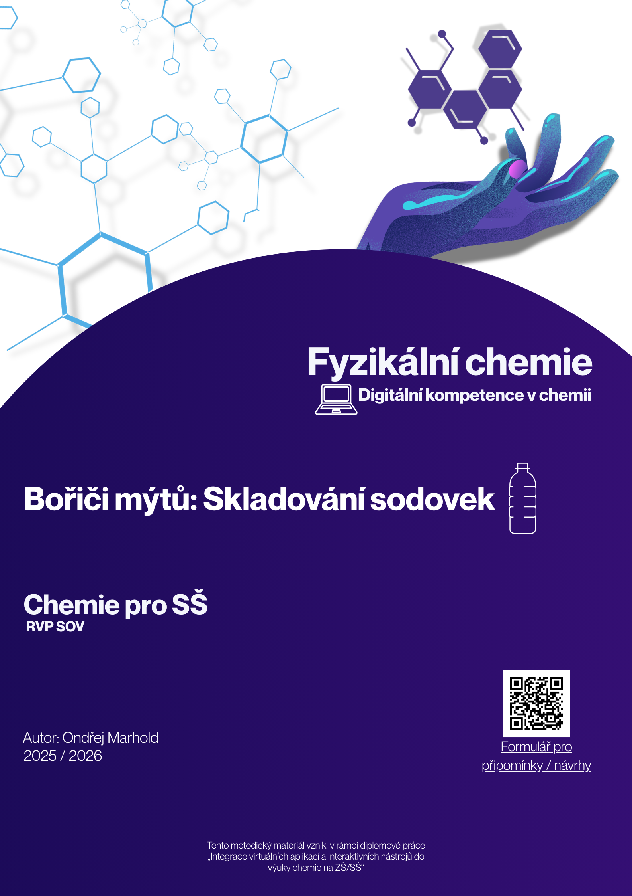

Bořiči mýtů: Skladování sodovek
Fyzikální chemie a digitální kompetence v praxi


Přežívá mezi námi představa, že zmáčknutím plastové (PET) lahve před jejím uzavřením "vytlačíme vzduch" a nenecháme bublinkám prostor k úniku, čímž nápoj zůstane déle perlivý. Je to ale skutečně pravda? Tento výukový modul v délce 45 minut vede žáky 3. a 4. ročníků středních škol a gymnázií k tomu, aby pomocí fyzikální chemie a digitálních nástrojů toto tvrzení kriticky zhodnotili.
Cíle a vazba na RVP
Aktivita propojuje chemii s informatikou. Místo pasivního přijímání informací žáci sami zkoumají, tvoří a vyvozují závěry. V rámci chemie se žáci učí aplikovat stavovou rovnici ideálního plynu, Henryho a Daltonův zákon pro řešení praktických problémů. Z hlediska digitálních kompetencí (nová informatika) modul rozvíjí schopnost interpretovat data, analyzovat interaktivní grafy a využívat digitální aplikace v pracovním prostředí.
Použitý nástroj: Aplikace Desmos
Jako hlavní digitální nástroj je využívána bezplatná webová aplikace Desmos. Ačkoliv je známá především jako grafická kalkulačka pro matematiku, v tomto modulu slouží jako interaktivní prostředí pro vizualizaci experimentálních dat a modelování závislostí mezi fyzikálními veličinami. Obrovskou výhodou je, že nevyžaduje registraci a žáci mohou okamžitě pracovat v předpřipravených grafech přes nasdílený odkaz nebo QR kód.
Jak to funguje ve výuce (E-U-R)
- Evokace (5 min): Hodina začíná puštěním krátkého online videa, kde "influencer" radí zmačkat lahev pro udržení bublinek. Žáci si formulují vlastní hypotézu.
- Uvědomění (25-30 min): Žáci pracují ve dvojicích s pracovním listem a webovým rozhraním Desmos. Učitel ustupuje do role facilitátora. Sledují, jaký vliv má pružnost PET lahve na objem a tlak.
- Reflexe (10-15 min): Společné sdílení výsledků.
Materiály ke stažení a odkazy
Zde naleznete kompletní metodické listy, žákovské pracovní listy a odkazy na připravené interaktivní plochy.